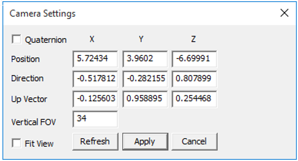
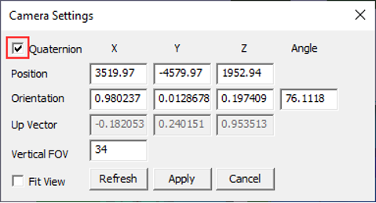

Camera Settings
VCollab users can change the camera view orientation by modifying the camera attributes in Camera Settings.
Camera Settings Panel


The various controls and fields available under Camera Settings are explained below.
Quaternion Toggles to Axis & Angle attributes. Position Allows user to modify camera position coordinates. Direction/Orientation Allows user to modify camera direction vector/ orientation axis and angle in case of quaternion option. Up Vector Allows user to modify camera Up vector. Vertical FOV This refers to camera 'Vertical Field of View' in case of Perspective. Fit View Helps to fit the model to the viewing window. Refresh Updates the current camera attribute to this dialog. Apply Click to apply all the attributes to the camera. Note:
- Up vector should be perpendicular to Direction vector. If not, a projected vector defined by the user as Up vector will be applied.
- A new field, Angle, is enabled if the Quaternion option is selected.
Steps to change camera attributes
Click Edit| Camera Settings
Enter camera position as X, Y and Z coordinates.
Enter Vertical FOV to change the field of view.
There are two ways to change the camera orientation by specifying:
Direction and Up vectors.
- Provide direction and up vectors in the corresponding fields.
Axis and Angle of camera orientation.
- Check the Quaternion option.
- In the Orientation field, provide axis of rotation x, y and z fields.
- Provide angle of degrees in the last field, Angle.
- Click Apply to see the change in camera view.
- Check Fit View to see the entire model in the scene with modified direction. Camera position may be different from user defined position in Fit View mode.